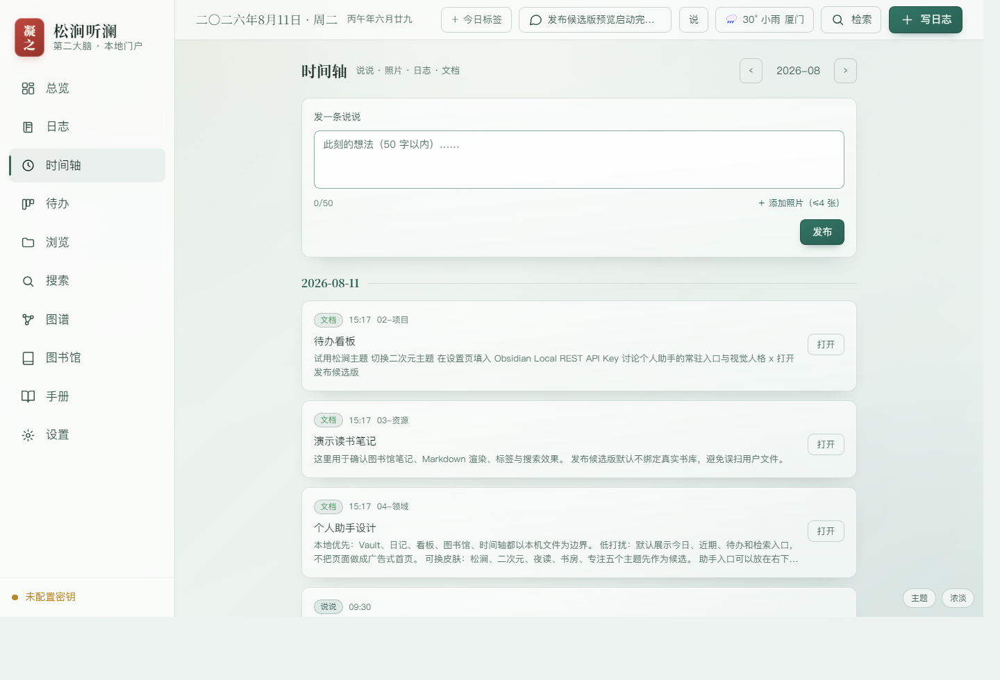
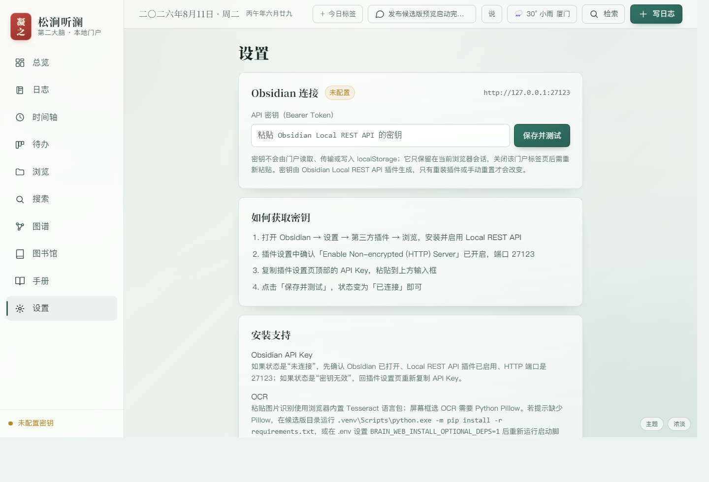
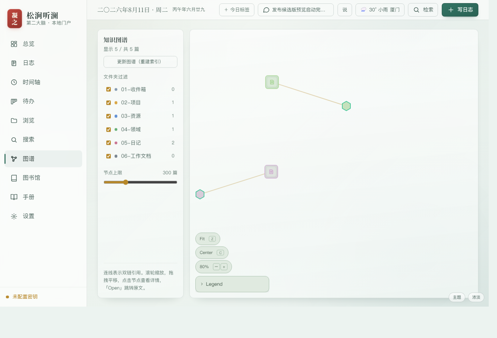

时间轴
把生活动态还给自己
说说、照片、日志摘录和文档改动合在一条本地时间轴里。它保留的是私人语境，而不是公开表演。
松涧听澜把散落的本地记录重新组织成一个可浏览、可检索、可回顾的个人空间。
日记、项目、领域、资源、图书馆和说说仍然是本机文件，但在门户里获得统一入口。
短想法、照片和日记不需要进入云端平台。它们可以只是写给未来的自己。
像个人社交网站一样记录生活，但没有点赞、推荐和曝光压力，只有检索和回顾。
以下截图来自发布候选版演示 Vault，未使用真实个人 Vault 或 API Key。

说说、照片、日志摘录和文档改动合在一条本地时间轴里。它保留的是私人语境，而不是公开表演。

设置页直接说明 Obsidian Local REST API、API Key、Pillow 和 OCR 的安装路径，减少首次使用时的摸索。

双链、文件夹、节点过滤和图形浏览帮助你重新看到记录之间的关系，而不改变 Markdown 的归属。
它首先是个人系统，其次才是软件项目。
安装 Python 3.11+ 后，双击候选包中的启动脚本即可预览。没有真实 Vault 时会自动创建演示 Vault。
双击 启动门户.bat 默认打开 http://127.0.0.1:8765/ 如端口被占用，自动尝试 8766 到 8776